import warnings
import numpy as np
import pandas as pd
import matplotlib.pyplot as plt
from statsmodels.stats.diagnostic import acorr_ljungbox
from statsmodels.tools.sm_exceptions import ConvergenceWarning
from statsmodels.tsa.arima.model import ARIMA
from statsmodels.tsa.arima_process import ArmaProcess
from statsmodels.tsa.ar_model import AutoReg
from statsmodels.tsa.stattools import acf, pacf
from scipy.signal import lfilter
import tsutils
tsutils.set_style()
pd.set_option("display.precision", 3)
daily = tsutils.load_daily_pm25()
y, actual = daily["pm25"], daily["actual"]
origins, H = tsutils.BACKTEST_ORIGINS, tsutils.HORIZON1. The autocorrelation function (ACF)
The autocorrelation at lag k is the correlation between the series and itself shifted by k steps. For a sample y_1, \dots, y_n with mean \bar y, the standard estimate is
r_k = \frac{\sum_{t=k+1}^{n} (y_t - \bar y)(y_{t-k} - \bar y)}{\sum_{t=1}^{n} (y_t - \bar y)^2}.
Note the denominator: it uses all n terms, not just the n - k overlapping ones. That shrinks long-lag estimates slightly towards zero, but it guarantees the ACF behaves like a proper autocorrelation function, which is why every library uses it.
def sample_acf(x, max_lag):
x = np.asarray(x, dtype=float) - np.mean(x)
denominator = np.sum(x * x)
return np.array([np.sum(x[k:] * x[:-k]) / denominator for k in range(1, max_lag + 1)])
log_y = np.log(y)
print("matches statsmodels:", np.allclose(sample_acf(log_y, 10), acf(log_y, nlags=10)[1:]))matches statsmodels: True
How big is "significant"?
If the series were white noise, each r_k would be approximately normal with mean 0 and standard deviation 1/\sqrt{n}. So values outside \pm 1.96/\sqrt{n} are unusual for white noise: that's the shaded band on every ACF plot.
Two cautions when reading those bands. First, with 30 lags on the plot, about 1 or 2 will poke outside by chance even for pure noise, since each has a 5% chance. Don't build a model around one marginal spike. Second, the band assumes white noise. Once the early lags are clearly non-zero, later lags have wider uncertainty than the band suggests.
def plot_acf_pacf(series, lags=20, title="", theory=None):
"""Sample ACF and PACF as stems, optional theoretical values as dots, with ±1.96/√n bands."""
fig, axes = plt.subplots(1, 2, figsize=(12, 3))
band = 1.96 / np.sqrt(len(series))
k = np.arange(1, lags + 1)
for ax, name, values in [(axes[0], "ACF", acf(series, nlags=lags)[1:]),
(axes[1], "PACF", pacf(series, nlags=lags)[1:])]:
ax.vlines(k, 0, values, lw=2)
ax.axhline(0, color="k", lw=0.8)
ax.axhspan(-band, band, color="#1f6feb", alpha=0.12)
if theory is not None:
ax.plot(k, theory[name], "o", color="#d1495b", ms=4, label="theory")
ax.legend(loc="upper right", fontsize=8)
ax.set(title=f"{title} {name}".strip(), xlabel="lag")
fig.tight_layout()
rng = np.random.default_rng(0)
plot_acf_pacf(pd.Series(rng.normal(size=500)), lags=30, title="White noise:")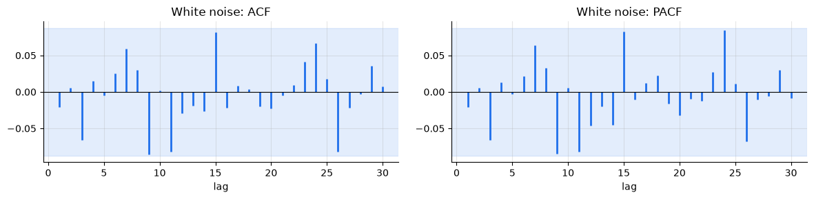
2. The partial autocorrelation function (PACF)
The ACF has a blind spot. If today depends on yesterday, and yesterday on the day before, then today and the day before will be correlated even if there's no direct link between them. The correlation is passed along the chain.
The partial autocorrelation at lag k removes that relay effect. It's the correlation between y_t and y_{t-k} after accounting for the lags in between. The clearest way to compute it is by regression: regress y_t on y_{t-1}, \dots, y_{t-k}, and the coefficient on y_{t-k} is the PACF at lag k.
def sample_pacf(x, max_lag):
"""PACF(k) = last coefficient when regressing y_t on a constant and y_{t-1}, ..., y_{t-k}."""
x = np.asarray(x, dtype=float)
out = []
for k in range(1, max_lag + 1):
target = x[k:]
lagged = [x[k - j:-j] for j in range(1, k + 1)]
design = np.column_stack([np.ones(len(target))] + lagged)
coefficients = np.linalg.lstsq(design, target, rcond=None)[0]
out.append(coefficients[-1])
return np.array(out)
print("matches statsmodels (OLS method):",
np.allclose(sample_pacf(log_y, 10), pacf(log_y, nlags=10, method="ols")[1:]))matches statsmodels (OLS method): True
(statsmodels' default PACF uses a slightly different estimator, Yule–Walker, which gives nearly the same values on long series. Our plots use the default.)
3. A zoo of processes and their fingerprints
Autoregressive, AR(p): today is a weighted sum of the last p values plus a new shock,
y_t = c + \phi_1 y_{t-1} + \dots + \phi_p y_{t-p} + \varepsilon_t.
Moving average, MA(q): today is a weighted sum of the last q shocks,
y_t = \mu + \varepsilon_t + \theta_1 \varepsilon_{t-1} + \dots + \theta_q \varepsilon_{t-q}.
⚠️ An MA model has nothing to do with moving-average smoothing from chapter 01. The name is historical. An MA model says today is built from recent random shocks, not from an average of recent observations.
ARMA(p, q) has both parts. Each has a characteristic fingerprint:
| Process | ACF | PACF |
|---|---|---|
| AR(p) | tails off gradually (decay, possibly oscillating) | cuts off after lag p |
| MA(q) | cuts off after lag q | tails off gradually |
| ARMA(p,q) | tails off | tails off |
The logic: in an AR(p), once you know the last p values, nothing older adds information, so the PACF stops. In an MA(q), a shock is forgotten after q steps, so the ACF stops.
statsmodels' ArmaProcess simulates any ARMA process and also gives its theoretical ACF and PACF, which we'll overlay as dots.
zoo = {
"AR(1): φ=0.7": ([0.7], []),
"AR(2): φ=(0.5, 0.3)": ([0.5, 0.3], []),
"MA(1): θ=0.8": ([], [0.8]),
"ARMA(1,1): φ=0.7, θ=0.4": ([0.7], [0.4]),
}
for name, (ar, ma) in zoo.items():
process = ArmaProcess.from_coeffs(ar, ma)
sample = process.generate_sample(1000, distrvs=np.random.default_rng(1).standard_normal)
theory = {"ACF": process.acf(21)[1:], "PACF": process.pacf(21)[1:]}
plot_acf_pacf(pd.Series(sample), lags=20, title=name, theory=theory)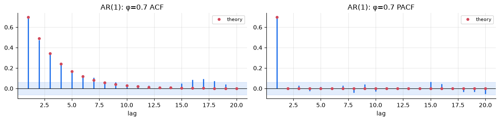
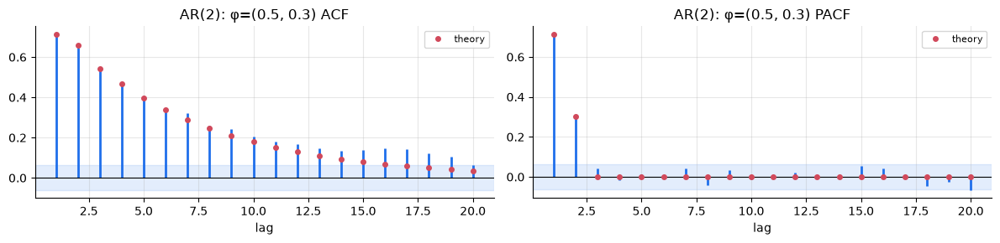
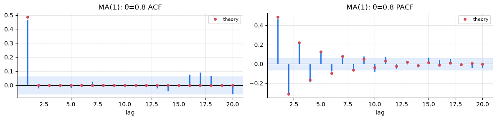
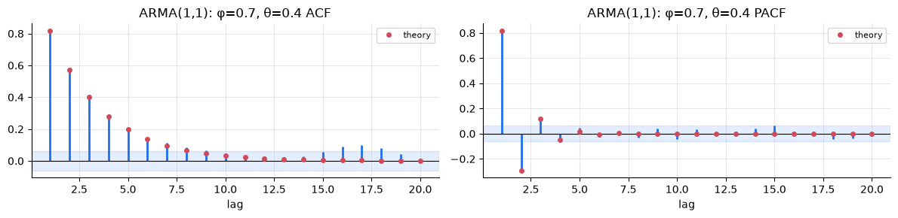
The sample values (stems) follow the theory (dots) closely with 1,000 observations, and the fingerprints are clear:
- AR(1): the ACF decays geometrically (0.7^k), and the PACF has a single spike.
- AR(2): the ACF decays, and the PACF has two spikes.
- MA(1): the ACF has a single spike, and the PACF decays with alternating sign.
- ARMA(1,1): both tail off, so neither plot pins down the orders. That's where information criteria come in (section 6).
On real data with a few hundred points, the patterns are rarely this clean. The fingerprints are a starting point for identification, not a verdict.
Stationarity and invertibility
Not every set of coefficients gives a sensible process. An AR model is stationary only if its coefficients don't let shocks build up. For AR(1) that means |\phi| < 1, and \phi = 1 is chapter 03's random walk. The general condition is that the roots of 1 - \phi_1 z - \dots - \phi_p z^p lie outside the unit circle. MA models have a mirror-image condition, invertibility, which makes the shocks recoverable from the data. ArmaProcess checks both:
for ar in ([0.7], [1.0], [0.5, 0.3], [0.5, 0.6]):
process = ArmaProcess.from_coeffs(ar, [])
print(f"AR coefficients {ar}: stationary = {process.isstationary}")AR coefficients [0.7]: stationary = True AR coefficients [1.0]: stationary = False AR coefficients [0.5, 0.3]: stationary = True AR coefficients [0.5, 0.6]: stationary = False
(0.5, 0.6) fails even though each coefficient is below 1: together they sum above 1, and the process would explode.
4. Fitting an ARMA model
statsmodels fits ARMA models by maximum likelihood through its ARIMA class. The order is (p, d, q), and the middle number is the differencing from chapter 03, which we'll use in chapter 07; for now it's 0. Let's check we can recover known coefficients from a simulated AR(2):
true_process = ArmaProcess.from_coeffs([0.5, 0.3], [])
simulated = true_process.generate_sample(500, distrvs=np.random.default_rng(2).standard_normal)
fit = ARIMA(simulated, order=(2, 0, 0), trend="c").fit()
pd.DataFrame({"estimate": fit.params, "std error": fit.bse,
"true": [0, 0.5, 0.3, 1.0]}, index=["const", "φ1", "φ2", "σ²"])estimate std error true const -0.256 0.190 0.0 φ1 0.463 0.044 0.5 φ2 0.297 0.045 0.3 σ² 1.022 0.066 1.0
The estimates land within about two standard errors of the truth. They're close but not exact: 500 observations carry limited information, and Exercise 2 shows that AR estimates are also slightly biased towards zero in short series.
5. How ARMA models forecast
For an AR(1) with mean \mu, the forecast h steps ahead is
\hat y_{T+h} = \mu + \phi^h\,(y_T - \mu).
Today's departure from the mean decays geometrically towards zero, exactly the damped persistence forecast you built by hand in chapter 04's Exercise 2. Now it's a fitted model with a proper error structure.
The forecast variance grows with the horizon, but only up to a limit:
\operatorname{Var}(y_{T+h} - \hat y_{T+h}) = \sigma^2 \,(1 + \phi^2 + \phi^4 + \dots + \phi^{2(h-1)}) \;\longrightarrow\; \frac{\sigma^2}{1 - \phi^2}.
For a stationary series, far-ahead uncertainty is simply the series' natural spread. Compare the random walk from chapter 03, whose uncertainty grows without limit.
steps = 40
shocks = np.random.default_rng(4).normal(size=300)
ar_path = lfilter([1], [1, -0.8], shocks) # AR(1) recursion, as in chapter 03
walk_path = np.cumsum(shocks) # same shocks, no reversion
fig, axes = plt.subplots(1, 2, figsize=(13, 4))
for ax, series, order, title in [(axes[0], ar_path, (1, 0, 0), "AR(1), φ = 0.8: forecasts revert, intervals level off"),
(axes[1], walk_path, (0, 1, 0), "Random walk: forecasts stay flat, intervals keep widening")]:
result = ARIMA(series, order=order, trend="c" if order[1] == 0 else "n").fit()
forecast = result.get_forecast(steps)
t_future = np.arange(len(series), len(series) + steps)
ax.plot(np.arange(len(series))[-80:], series[-80:], color="k", lw=1)
ax.plot(t_future, forecast.predicted_mean, color="#d1495b")
band = forecast.conf_int(alpha=0.2)
ax.fill_between(t_future, band[:, 0], band[:, 1], color="#d1495b", alpha=0.2)
ax.set_title(title, fontsize=10)
fig.tight_layout();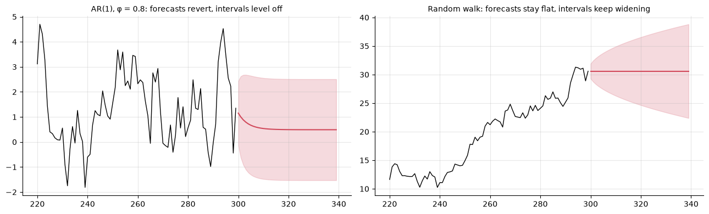
6. ARMA for Beijing PM2.5
Our series has a seasonal profile (chapter 02) that an ARMA model with a constant mean can't represent. So we split the job in two, on the log scale:
\log y_t = \underbrace{s(\text{day of year}_t)}_{\text{seasonal profile}} + \underbrace{a_t}_{\text{anomaly: ARMA}}
The profile s is a log-scale climatology: the median log PM2.5 for each day of the year, smoothed over a month. It's learned only from the history available at each origin. tsutils.log_climatology_profile computes it. The ARMA model then describes how the day-to-day anomalies a_t remember and forget.
train = y[:"2013-12-31"]
profile = tsutils.log_climatology_profile(train)
def anomalies(series, profile):
return np.log(series) - profile.reindex(series.index.dayofyear).to_numpy()
train_anomaly = anomalies(train, profile)
fig, axes = plt.subplots(1, 2, figsize=(13, 3.5))
np.exp(profile).plot(ax=axes[0], title="Seasonal profile (2010–2013)", ylabel="typical PM2.5 (µg/m³)")
train_anomaly.plot(ax=axes[1], lw=0.4, title="Log anomalies: what the ARMA model must explain")
fig.tight_layout()
plot_acf_pacf(train_anomaly, lags=20, title="Anomalies:")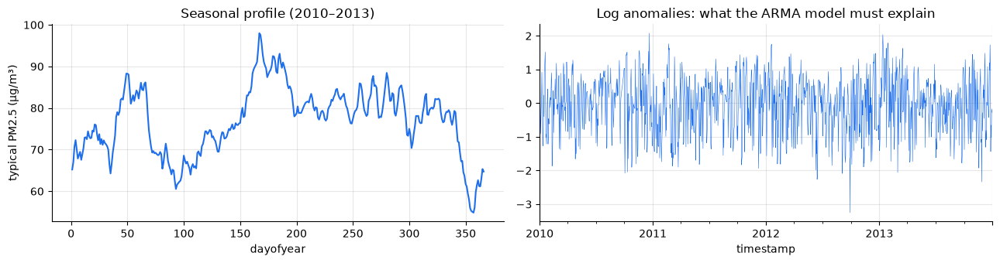
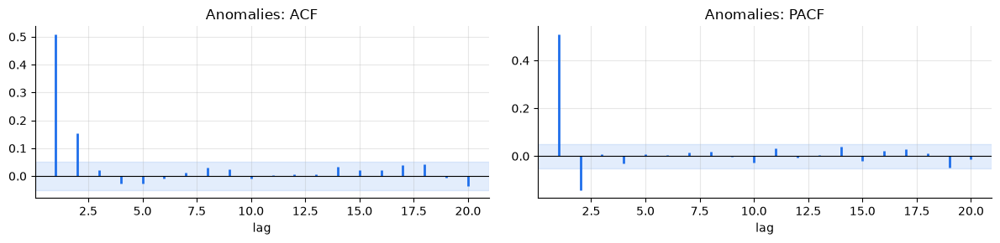
The anomalies have the AR fingerprint: the ACF decays quickly (0.5, then about 0.15, then about 0), and the PACF has two clear spikes, the second one negative, and then nothing. The fingerprint suggests an AR(2).
Letting information criteria decide
Fingerprints are suggestive; information criteria are systematic. We fit every ARMA(p, q) with p, q \le 3 and compare AIC and BIC. Both reward fit and penalise parameters, and BIC penalises more heavily. A few of the larger models struggle to converge; we silence those warnings here, since the criteria will rank them poorly anyway.
rows = []
with warnings.catch_warnings():
warnings.simplefilter("ignore", ConvergenceWarning)
for p in range(4):
for q in range(4):
result = ARIMA(train_anomaly.to_numpy(), order=(p, 0, q), trend="c").fit()
rows.append({"p": p, "q": q, "AIC": result.aic, "BIC": result.bic})
ic = pd.DataFrame(rows)
ic.sort_values("AIC").head(6)p q AIC BIC 8 2 0 3048.678 3069.826 5 1 1 3049.204 3070.351 3 0 3 3050.015 3076.449 9 2 1 3050.564 3076.998 12 3 0 3050.613 3077.047 6 1 2 3050.921 3077.356
ic.pivot(index="p", columns="q", values="BIC").style.format("{:.1f}").highlight_min(axis=None, color="#cfe3ff")q 0 1 2 3 p 0 3525.1 3104.3 3073.7 3076.4 1 3092.6 3070.4 3077.4 3083.7 2 3069.8 3077.0 3083.6 3090.1 3 3077.0 3083.6 3090.3 3096.1
AR(2) comes out on top on both criteria, agreeing with the PACF. ARMA(1,1) is a close second, and it produces nearly identical forecasts. When two models are this close, prefer the simpler or more interpretable one, and let the backtest have the final word.
Residual checks: has the model captured the memory?
If a model has captured the series' memory, its residuals should look like white noise. The Ljung–Box test checks many residual autocorrelations at once. Its null hypothesis is "no autocorrelation up to lag m", so here we want large p-values.
fits = {name: ARIMA(train_anomaly.to_numpy(), order=order, trend="c").fit()
for name, order in [("AR(1)", (1, 0, 0)), ("AR(2)", (2, 0, 0))]}
pd.concat({name: acorr_ljungbox(f.resid, lags=[7, 14]) for name, f in fits.items()}).rename_axis(["model", "lags"]) lb_stat lb_pvalue
model lags
AR(1) 7 30.739 6.946e-05
14 36.750 8.049e-04
AR(2) 7 1.437 9.844e-01
14 8.279 8.743e-01
plot_acf_pacf(pd.Series(fits["AR(1)"].resid), lags=20, title="AR(1) residuals:")
plot_acf_pacf(pd.Series(fits["AR(2)"].resid), lags=20, title="AR(2) residuals:")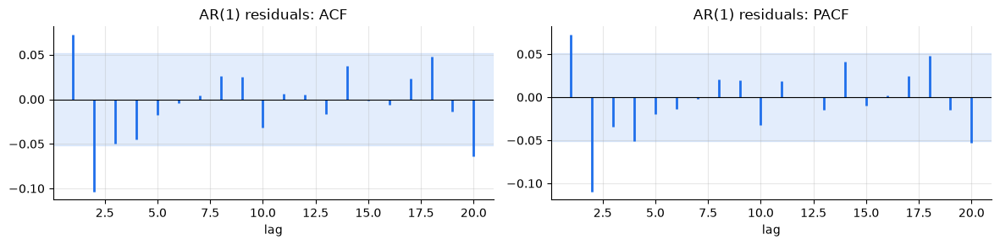
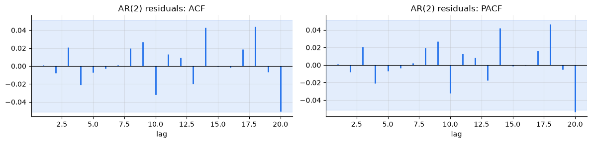
AR(1) fails: its residuals still show a positive spike at lag 1 and a larger negative one at lag 2, both outside the band, and Ljung–Box rejects white noise decisively. AR(2) passes. That second coefficient isn't decoration: it captures how quickly episodes clear, a little faster than a single geometric decay would allow.
fits["AR(2)"].summary().tables[1]<class 'statsmodels.iolib.table.SimpleTable'>
7. The backtest
Now the real test, on the chapter 04 setup. At every origin we re-learn the profile and refit the ARMA model from the history alone, forecast the anomalies, add back the profile, and exponentiate. That gives a median-type forecast on the original scale, which suits MAE (chapter 04). We'll also collect the model's 80% prediction intervals as we go.
def arma_forecaster(order, intervals=None):
"""Seasonal log profile + ARMA(order) on anomalies, refitted on each history."""
def forecast(history, horizon):
profile_ = tsutils.log_climatology_profile(history)
anomaly = anomalies(history, profile_)
result = ARIMA(anomaly.to_numpy(), order=order, trend="c").fit()
prediction = result.get_forecast(horizon)
targets = pd.date_range(history.index[-1] + pd.Timedelta(days=1), periods=horizon, freq="D")
seasonal = profile_.reindex(targets.dayofyear).to_numpy()
if intervals is not None:
band = prediction.conf_int(alpha=0.2)
intervals[history.index[-1]] = np.exp(band + seasonal[:, None])
return np.exp(prediction.predicted_mean + seasonal)
return forecast
ar2_intervals = {}
arma_scores = {
"AR(1) on anomalies": tsutils.evaluate(tsutils.backtest(y, arma_forecaster((1, 0, 0)), origins, H, actuals=actual)),
"AR(2) on anomalies": tsutils.evaluate(tsutils.backtest(y, arma_forecaster((2, 0, 0), ar2_intervals),
origins, H, actuals=actual)),
}
for name, scores in arma_scores.items():
tsutils.save_scores(name, scores)
board = tsutils.load_scores().pivot(index="h", columns="model", values="MAE")
board[["naive", "climatology (median)", "SES (log), α per horizon", "AR(1) on anomalies", "AR(2) on anomalies"]]model naive climatology (median) SES (log), α per horizon \ h 1 51.105 56.079 52.135 2 72.237 56.561 56.283 3 81.266 56.771 56.078 4 81.559 57.133 56.347 5 76.293 57.099 56.310 6 75.097 57.132 56.320 7 76.937 57.068 56.261 model AR(1) on anomalies AR(2) on anomalies h 1 47.737 46.803 2 56.563 55.419 3 57.349 56.264 4 56.869 56.533 5 56.475 56.587 6 56.455 56.491 7 56.417 56.407
fig, ax = plt.subplots()
for name in ["naive", "climatology (median)", "SES (log), α per horizon", "AR(2) on anomalies"]:
ax.plot(board.index, board[name], marker="o", label=name)
ax.set(title="MAE by horizon: ARMA vs. the best earlier models", xlabel="days ahead", ylabel="MAE (µg/m³)")
ax.legend();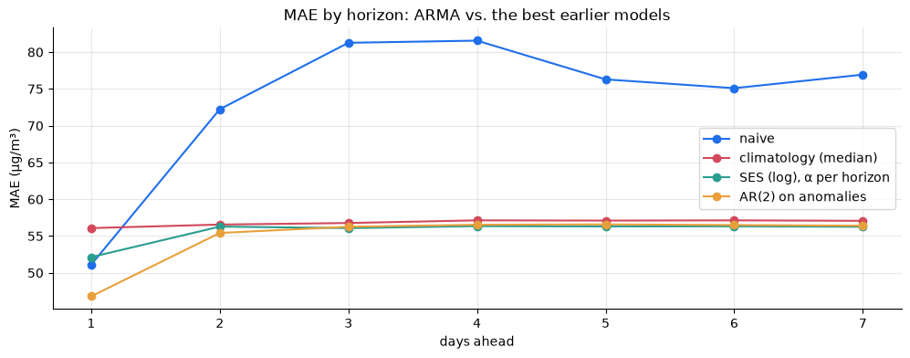
The first model to lead at both ends.
- One day ahead, AR(2) is the best forecast so far, clearly ahead of naive, the previous leader. It uses today's anomaly, but only as much of it as the data say survives to tomorrow.
- Two days ahead it's also the best, about 1 µg/m³ ahead of both climatology and the per-horizon SES.
- From about day 3, it settles to the same level as climatology and the long-memory SES. That isn't a failure. The forecast has decayed back to the seasonal profile because, as chapter 03 found, the series has forgotten today's conditions by then. No model that uses only past PM2.5 can do much better at those horizons. The remaining information is in things the series itself doesn't contain, above all the weather forecast, which chapters 07 and 09 bring in.
AR(2) also edges out AR(1) at short horizons, as the residual checks predicted.
Are the intervals honest?
rows = []
for origin_, band in ar2_intervals.items():
dates = pd.date_range(origin_ + pd.Timedelta(days=1), periods=H, freq="D")
rows.append(pd.DataFrame({"h": np.arange(1, H + 1), "lower": band[:, 0], "upper": band[:, 1],
"actual": actual.reindex(dates).to_numpy()}))
scored = pd.concat(rows).dropna(subset=["actual"])
inside = (scored["actual"] >= scored["lower"]) & (scored["actual"] <= scored["upper"])
inside.groupby(scored["h"]).mean().rename("coverage of 80% interval").to_frame().T.style.format("{:.0%}")h 1 2 3 4 5 6 7 coverage of 80% interval 80% 78% 78% 78% 78% 78% 78%
The AR(2) intervals come out close to the 80% they promise across horizons, without any calibration step. Working on the log scale helps: there, the anomalies are close to the constant-variance, roughly normal errors the model assumes. The intervals also widen from day 1 to day 2 and then stop. That's section 5's theory showing up in real data: beyond a couple of days, the uncertainty is simply the natural spread of PM2.5 at that time of year.
Exercises
Exercise 1: Identify these processes
For each of the three processes below, simulate 800 observations with ArmaProcess.from_coeffs(...).generate_sample(...), plot the ACF and PACF, and guess the orders before checking with an AIC grid over p, q \le 2:
- A: AR coefficients
[0.6, -0.3], no MA - B: no AR, MA coefficients
[0.6, 0.4] - C: AR
[0.8], MA[-0.5]
Solution
mystery = {"A": ([0.6, -0.3], []), "B": ([], [0.6, 0.4]), "C": ([0.8], [-0.5])}
for label, (ar, ma) in mystery.items():
sample = ArmaProcess.from_coeffs(ar, ma).generate_sample(800, distrvs=np.random.default_rng(10).standard_normal)
plot_acf_pacf(pd.Series(sample), lags=15, title=f"Process {label}:")
with warnings.catch_warnings():
warnings.simplefilter("ignore") # start-up and convergence warnings from poor candidate orders
aic = {(p, q): ARIMA(sample, order=(p, 0, q), trend="c").fit().aic for p in range(3) for q in range(3)}
print(label, "-> lowest AIC at (p, q) =", min(aic, key=aic.get))
A is an AR(2): the ACF oscillates as it decays, and the PACF cuts off after lag 2. B is an MA(2): the ACF cuts off after lag 2. C is an ARMA(1,1): both plots tail off, and it's the hardest to identify by eye. AIC usually finds the right orders here, but with less data or smaller coefficients it can pick a neighbouring model that forecasts almost identically. That's fine for forecasting, less so if you want to interpret the coefficients.
Exercise 2: AR estimates are biased in short series
Simulate 500 AR(1) series with φ = 0.9 at each length n = 50, 200 and 1000. Fit each by least squares with AutoReg(x, lags=1, trend="c"), which is much faster than ARIMA for 1,500 fits and has the same small-sample bias. Compare the average estimate with the true value and with Kendall's approximation for the expected estimate, \phi - (1 + 3\phi)/n.
Solution
process = ArmaProcess.from_coeffs([0.9], [])
sim_rng = np.random.default_rng(3)
rows = []
for n in [50, 200, 1000]:
estimates = [AutoReg(process.generate_sample(n, distrvs=sim_rng.standard_normal, burnin=200),
lags=1, trend="c").fit().params[1] for _ in range(500)]
rows.append({"n": n, "mean estimate": np.mean(estimates),
"Kendall approximation": 0.9 - (1 + 3 * 0.9) / n, "spread (sd)": np.std(estimates)})
pd.DataFrame(rows).set_index("n")
With 50 observations the average estimate falls noticeably short of 0.9, close to Kendall's formula. The bias shrinks as n grows. Estimating the mean from the same short sample makes the series look more mean-reverting than it really is. For forecasting that means short histories understate persistence, which is one reason models fitted on a few months of data revert too fast.
Exercise 3: Pseudo-cycles from AR(2)
An AR(2) whose characteristic roots are complex produces pseudo-cycles: waves with a typical, but not fixed, length. Take φ = (1.0, −0.5). Use ArmaProcess.from_coeffs([1.0, -0.5], []).arroots to get the roots, and compute the implied period 2\pi / |\text{angle}|. Then simulate 500 points, plot them, and plot the theoretical ACF for 30 lags. Does the ACF oscillate with that period?
Solution
process = ArmaProcess.from_coeffs([1.0, -0.5], [])
roots = process.arroots
period = 2 * np.pi / np.abs(np.angle(roots[0]))
print("roots:", np.round(roots, 3), f"-> period ≈ {period:.1f} steps")
fig, axes = plt.subplots(1, 2, figsize=(13, 3.5))
axes[0].plot(process.generate_sample(500, distrvs=np.random.default_rng(6).standard_normal), lw=0.8)
axes[0].set_title("AR(2) with complex roots: irregular waves")
axes[1].stem(process.acf(31)[1:])
axes[1].set_title(f"Theoretical ACF: damped oscillation, period ≈ {period:.0f}")
fig.tight_layout()
The period is 8 steps, and the ACF swings through a full cycle roughly every 8 lags while decaying. The simulated series shows waves of roughly that length, but irregular, because shocks keep nudging the phase. This is how AR models represent quasi-periodic behaviour such as business cycles, and why they aren't the same as fixed seasonality.
Exercise 4: AR(1) forecasts are damped persistence
Fit an AR(1) with a constant to train_anomaly. From the fitted mean \mu (in statsmodels, the const parameter is the mean) and \phi, compute \mu + \phi^h (a_T - \mu) for h = 1, \dots, 7 by hand, where a_T is the last training anomaly. Check that it matches fit.forecast(7), then work out the half-life of an anomaly in days.
Solution
fit1 = ARIMA(train_anomaly.to_numpy(), order=(1, 0, 0), trend="c").fit()
mu, phi = fit1.params[0], fit1.params[1]
last = train_anomaly.iloc[-1]
by_hand = mu + phi ** np.arange(1, 8) * (last - mu)
print("matches statsmodels:", np.allclose(by_hand, fit1.forecast(7)))
print(f"φ = {phi:.2f} -> half-life ≈ {np.log(0.5) / np.log(phi):.1f} days")
The two agree exactly. The half-life, about a day, matches chapter 03's estimate from the raw series. Now it comes from a fitted model with standard errors and intervals, instead of a hand-built rule.
Key takeaways
- The ACF measures a series' total memory at each lag. The PACF measures the direct part, after removing intermediate lags. Both are easy to compute from scratch.
- AR(p): ACF tails off, PACF cuts off after p. MA(q): the reverse. ARMA: both tail off, so use AIC/BIC and let the backtest decide.
- ARMA forecasts revert to the mean geometrically, and their intervals level off at the series' natural spread, unlike a random walk's.
- Check residuals with Ljung–Box. On PM2.5 anomalies, AR(1) left structure behind and AR(2) didn't.
- Seasonal profile + AR(2) on log anomalies is the best model on the scoreboard at 1 and 2 days ahead, with well-calibrated intervals. Beyond that, no model built on past PM2.5 alone does much better than climatology. The next gains must come from outside information.
Next: 07 · ARIMA, SARIMA and SARIMAX. We'll add differencing and seasonal terms (and CO₂ will show why they matter), then feed weather into the model as exogenous inputs.